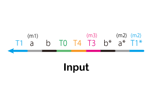
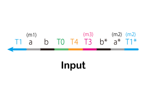

Page Overview
On this page, we describe the methods and results of the experiments examining the DNA circuit mentioned above. Three experiments were conducted. The final goal was to move our designed DP gate bridge in the living body. Although this BIOMOD was not achieved because of time limits, we developed a means to conduct the experiment and predicted problems that may occur.
Confirmation ATP Controller action in vitro
T7 promotor sequence variation
Outline of experiment
T7 RNA polymerase recognizes the T7 promoter sequence and synthesizes RNA that will be a copy of the downstream sequence using ATP in buffer.
This experiment was designed to prevent recognition of the T7 promoter by using mismatched base pairs.
Therefore, we injected the T7 promoter containing mismatches into Escherichia coli with T7 RNA polymerase and examined whether polymerase recognized the sequence.
Experiment method
Experiments are performed in E.
coli using cyclic DNA known as a plasmid. The T7 promoter sequence containing a mismatch should be incorporated into the plasmid sequence,
as well as a downstream sequence that produces a green fluorescent protein known as GFP.
This plasmid is introduced into E. coli, and GFP fluorescence is observed.
Experiment contents
①Production of mutated plasmids
First, we designed a mismatch sequence changed at one position at the end of the T7 promoter sequence.
This was done to maintain a similar bond strength as the original two DNAs.
Next, a plasmid containing the designed DNA sequence was extracted and amplified by PCR. Water, dNTPs, primers, templates, KODFXNEO, and other components were prepared in a total volume of 50 μL mutated plasmids were synthesized in 3 h.
Thereafter, because plasmids with mutation and no mutation were present in the solution, the original plasmid without mutation was digested with DPN (enzyme).
The reaction solution contained DPN (1 μm),·TBuffer X 10 (1 μm), Solution (8 μm) Mutate, which was mixed with the plasmid and introduced into E. coli for plasmid amplification.
Escherichia coli used at this time was named as DHSr, which does not contain T7 RNA polymerase, and was used to increase the amount of plasmid.
The plasmid was mixed with competent cells on ice and incubated for 30 min. Incubate for 30 s, followed by incubation at 37°C for 1 h.
The solution was transferred to a culture dish containing medium and the cells were grown overnight. Using a MiniPrep kit, the plasmid was extracted from E. coli and measured.
Sequencing was carried out to confirm the presence of the mutation.
②Confirmation of reaction of mutated plasmid
Next, the extracted mutant plasmid was introduced into E. coli BL21 (DE3) containing T7 RNA polymerase. In the same manner as in ①, the plasmid containing the mutation was introduced into E. coli and cultured for 1 day, after which GFP fluorescence was confirmed.
Experiment result
Production of mutated plasmid by ① was successful. After introduction into E. coli at ①, the following results were obtained.
Fluorescence was confirmed, indicating that polymerase recognized the mutated T7 promoter sequence.
Consideration
Based on the above results, when one part of the end of the sequence was changed, polymerase recognized this sequence. We could not conduct further experiments during this BIOMOD period, but based on this experiment, we reviewed a previous study which added a mismatch to the promoter sequence. According to the paper, promoter sequences were found to be meaningful for enzymes in each sequence (See the figure from the paper). The mutation was added to position 0, which is a sequence that affects the synthesis rate from mRNA to protein. In the previous study, a mutation was inserted between position -17 of the promoter sequence and position -5, followed by analysis. Particularly, mismatches were introduced from -9 to -5; based on these results, the optimal mismatch base can be introduced into our promoter sequence.
Experiment in vivo
The final goal is to move our designed DP gate bridge in the living body. Although this BIOMOD could not be achieved because of the time limit, we developed an experimental method and predicted problems that may arise.
Outline of experiment
The DPgate bridge is introduced into E. coli and absorption of ATP is detected. Additionally, differences in the reaction time and whether the DNA circuit is working well are examined.
Experiment method
The plasmid is introduced into E. coli (BL21 (DE3)) by electroporation or other similar methods.
The electroporation method involves electric pulsing of the cell membrane to create pores, through which DNA enters the cell.
Other methods can also be used to deliver DNA into cells. Next, the movement of the circuit will be tracked by measuring the change in the amount of ATP in the cell over time.
{kind=link}
Problems
It is unknown whether the DNA circuit actually moves. As E. coli divides over time, the number of circuits in the cell will decrease. In the case of a plasmid, a process that divides the plasmid simultaneously occurs when E. coli divides, but whether the same process can be added to the DNA circuit is unknown. As a solution, the rate of proliferation of E. coli slows at low temperature; thus, if the cells are cultured at a low temperature, the influence of intracellular dilution can be suppressed.
Material & Methods
Simulation conditions
We set the binding rate constant (kf) based on toehold length as follows.
If toehold_length ≤ 6
kf = 5.0×10n-1[M-1s-1]
else
kf = 3.0×106[M-1s-1]
Where
n : toehold_length
Type of Strands
We designed the strands shown in Figures 5-9.
 
{kind=link}


.gif)
Additionally, we designed DNA sequences using NUPACK.
The DNA sequences are shown in Table 1.
NUPACK can design DNA sequences and evaluate their secondary structures at room temperature.